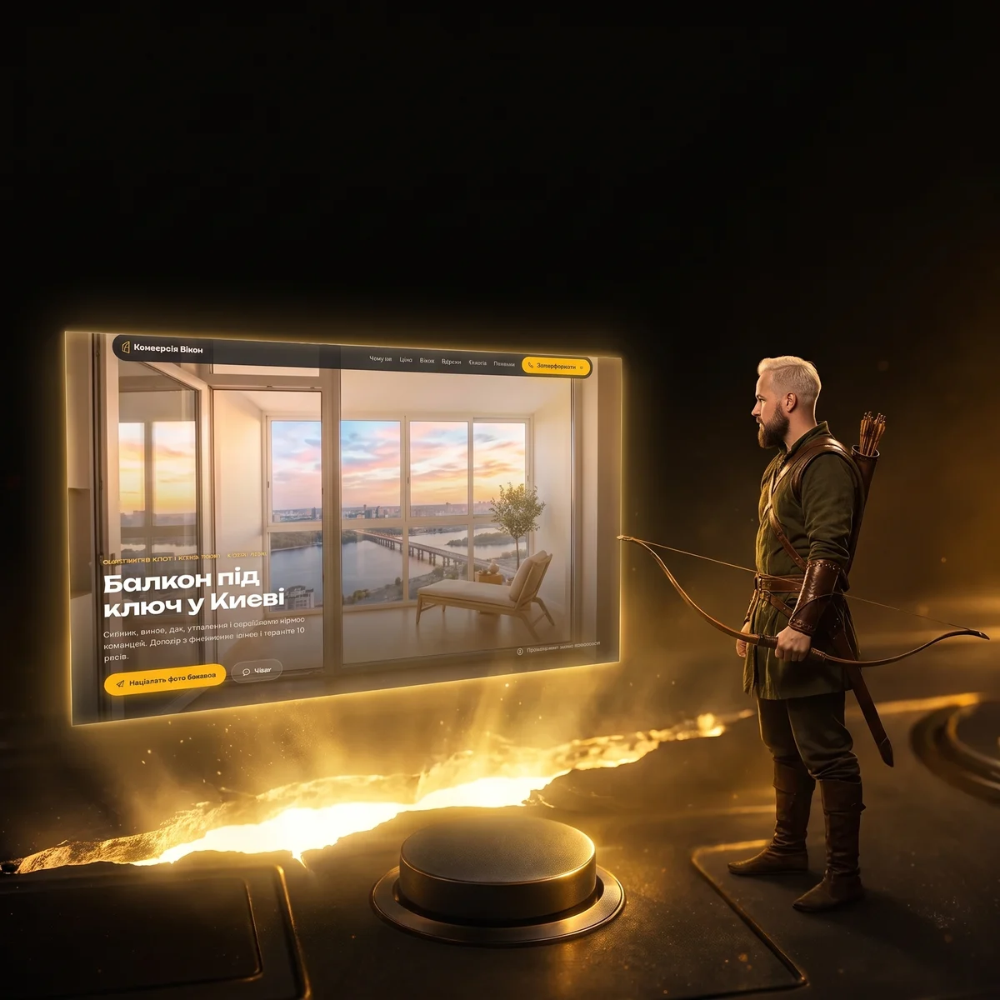
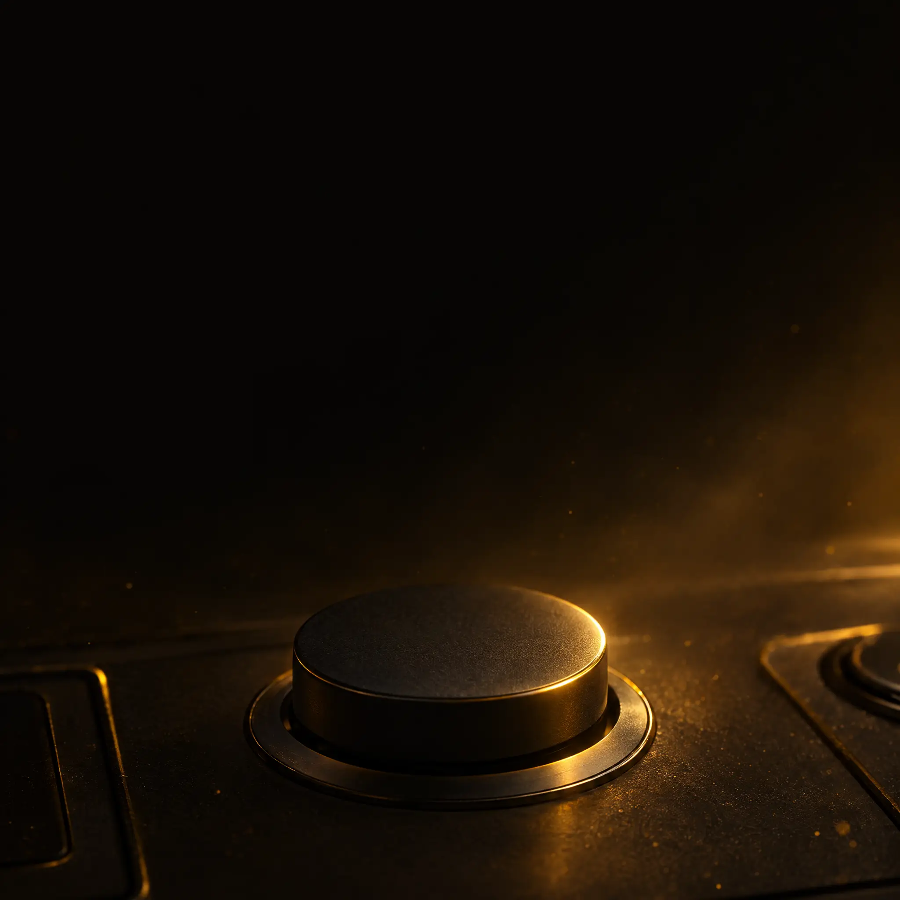
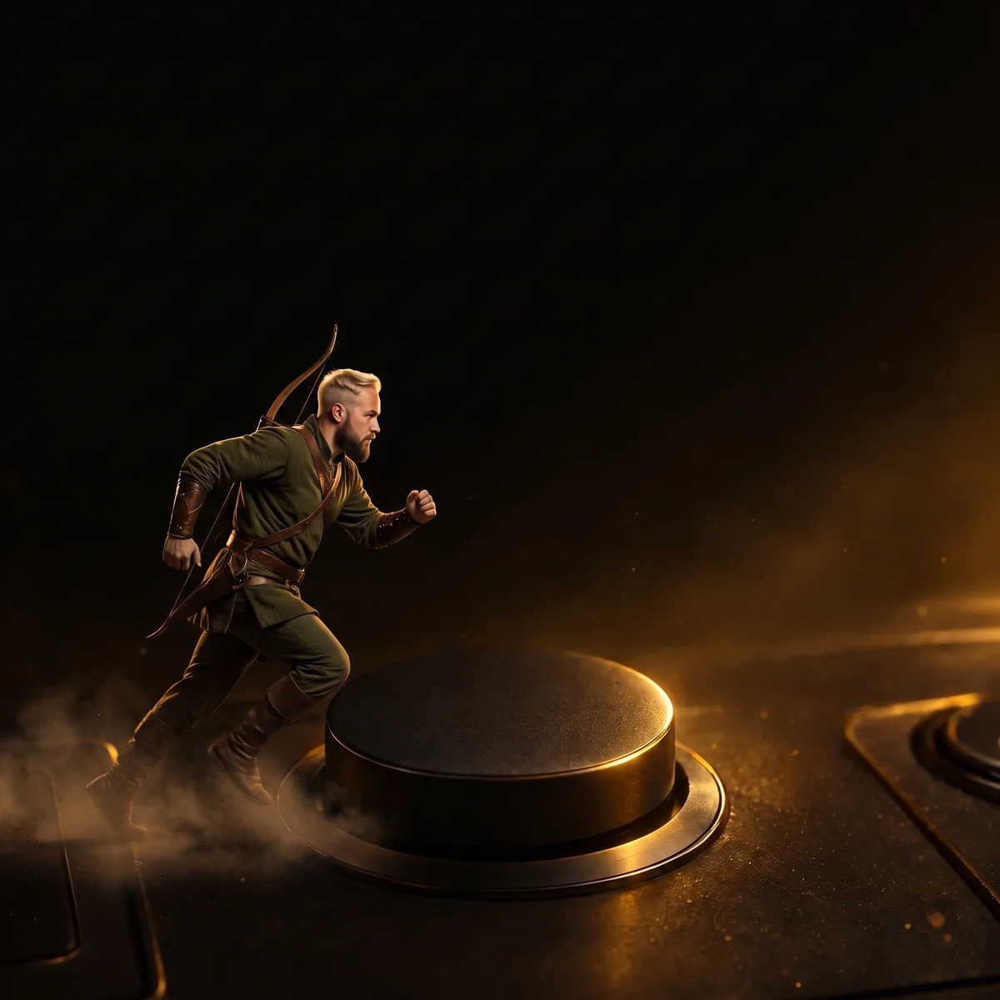
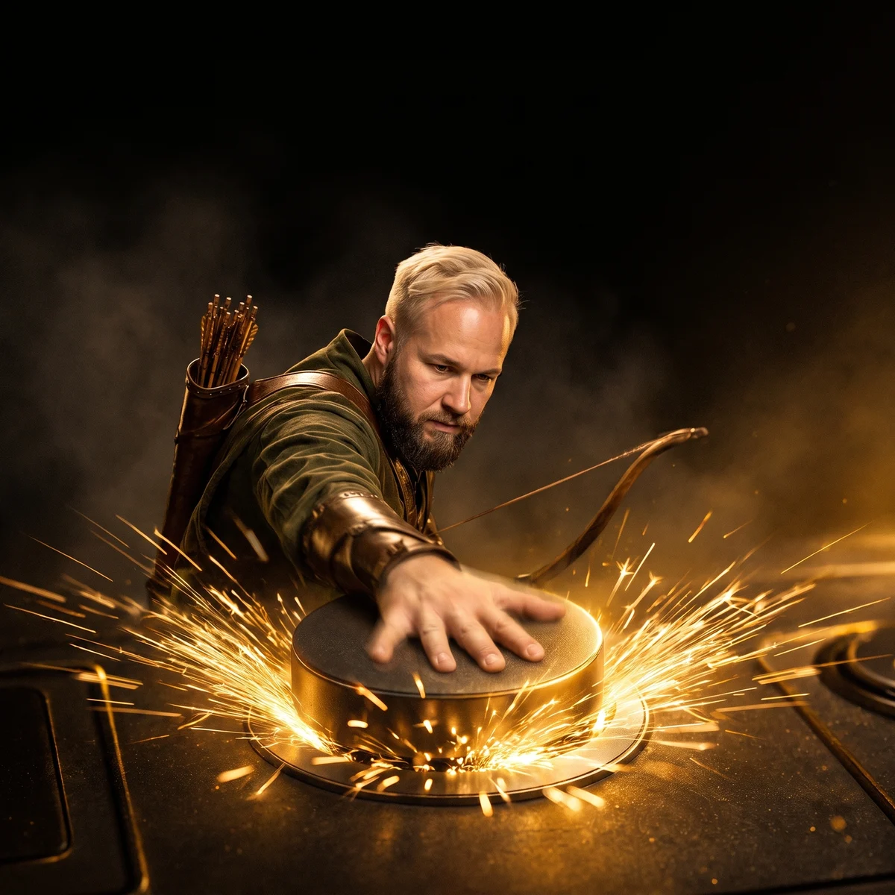

Кнопка → розлом → сайт
Влад-лучник підбігає до великої кнопки, б'є по ній — підлога розколюється золотим світлом, з розлому піднімається екран із сайтом, зібраним агентом. Кнопка = велика подія. Один рух на вході ≈ 5 с, далі статичний фінальний кадр із живою кнопкою «Забронировать место — $10». Гроші — максимум дрібний золотий пил, без акценту.

Если эти два часа что-то в вас сдвинули —
нажмите сейчас
Поток ограничен людьми · бронь возвращается без вопросов
Фінальний кадр (після анімації): заголовок і підзаголовок угорі на темному небі кадру, розлом із сайтом — у центрі, Влад збоку не перекриває текст, жива жовта кнопка внизу (клікабельна, посилання на оплату).
Чому працює: кнопку в слайді «нажали за глядача» — дія показана, а не сказана. Із розлому виходить результат (сайт), а не обіцянка. Влад-лучник — той самий персонаж, що й в «охотнику», тож це продовження історії, а не новий герой.
Тривалість: ~5 с, раз на вході. Повтор — вийти й повернутися на слайд (вхід перезапускає анімацію); можемо додати окрему клавішу.
Звук (опційно): тупий удар по кнопці → тріск → низький гул світла. На ефірі дека грає без звуку, якщо Влад не ввімкне V.

Если эти два часа…
нажмите сейчас
Тиша перед подією
Як зараз: темна кімната, велика металева кнопка в підлозі, заголовок. Глядач встигає прочитати «нажмите сейчас».

генерується…Влад-лучник вбігає
Зліва з темряви, лук за спиною, пил з-під ніг, золотий контровий світ. Камера низько, легкий наїзд.
gen-1009/vlad/hunter.webp.
генерується…Удар по кнопці
Крупно: долоня б'є, кнопка провалюється в кільце, з-під краю — золоті іскри. Камера здригається (200 мс).
Ударна хвиля і тріщина
Від кнопки по підлозі йде золоте кільце, підлога тріскається, у тріщини б'є світло. Кадр на мить спалахує золотом.
З розлому — сайт
Розлом розходиться, з нього піднімається світний екран: сайт «Конверсія Вікон» (той, що продали в кейсі з вікнами). Влад відходить убік і дивиться на екран.
Если эти два часа…
нажмите сейчас
Кнопка народжується зі світла
Із того ж світла збирається жива жовта кнопка, один раз пульсує. Далі кадр стоїть: заголовок, розлом із сайтом, Влад, кнопка.
Як зробимо
- Ключові кадри 2/3/5 — Nano Banana Pro з референсами: Влад-лучник + поточний фон із кнопкою (+ скрін сайту для кадру 5).
- Відео 5 с, 1080×1080 — Seedance 2.5 (omni_reference): старт = поточний фон, кінець = кадр 5. Якщо одним дублем «пливе» — два кліпи: вбіг→удар, удар→розлом.
- Поверх відео кодом: струс на ударі, ударна хвиля, чіткий скрін сайту в розломі, поява CTA.
- У деці: відео один раз на вході, тримає останній кадр; повторний вхід на слайд — повтор; постер = поточний фон (нічого не «стрибає», якщо відео ще вантажиться).
Що вирішити
- Сайт у розломі: «Конверсія Вікон» (кейс із вікнами) чи інший — наприклад, сайт стоматології з пульта агентів?
- Гроші: прибрати зовсім чи лишити дрібний золотий пил із розлому (без купюр)?
- Влад-лучник з луком за спиною — ок? Або без лука, у звичному вигляді?
- Звук удару — потрібен чи дека лишається без звуку?